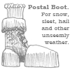
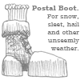

|
The Sears Roebuck catalog is as essential to the understanding of the American mind as the barbecue is to the Australian stomach. This literary achievement eased a new country through the profound shift from nineteenth to twentieth centuries, focusing on the most neglected part of their intellectual tradition, the vast middle of their geography, where men toiled blankly and women languished pitiably. It was here, to this land of promise on the verge of spiritual wasteland, that the postal service delivered its thick, tangible dream. With this book, you could literally feel the weight of possibility. The forefronts of technology and fashion were parceled into easily digestible squares of typography. Perhaps it was at this point in history that Americans began their brave tradition of living for the sake of what could be, rather than what is, a tradition that has brought them to the deserts of the Middle East and to the feet of credit card companies.
And then, when dreams were over and tucked to sleep, the sacred pages were hung with care in outhouses throughout the land, where they dutifully contributed to the hygiene of this fair citizenry. It is my proud privilege to present to you a reunion of sorts, as The Shit Creek Review pays tribute to the Sears Roebuck catalog with dreams for a new generation, dreams that we hope transcend national boundaries and a new breed of desire that includes peace and solvency for all.
Heart of Darkness
As we paddle ever onwards up-creek, penetrating deeper and deeper into the heart of darkness, the absinthe-crazed crew are very pleased to welcome Angela France on board the little canoe as Poetry Editor (from issue #5 on, along with the current surly incumbents, Nigel Holt and Paul Stevens). We are hoping that Angela will add a note of sanity to the bizarre goings-on around the compound late at night, and bring some sense of order and decorum to the bribery, head-collection and human sacrifice.
Oh, the horror! The horror! For our next issue, vaguely due out in October, The Shit Creek Review seeks poetry, prose and art on Horror—whatever that means to you. As always you may give the theme the widest and weirdest interpretation you please. So make our spines crawl; give us that uneasy-queasy feeling of apprehension; disgust us; set us us laughing nervously; frighten the blooming wits out of us; or at the very least cause us mild concern. If you dare! More details on the Submissions Guidelines page: please read and completely memorise these guidelines before submitting work!
Zine Overboard!
Speaking of horror: at last we're getting rid of that obnoxious hanger-on, the parasitic subzine II. Tired of having it drink our beer, pile korma-sauce-encrusted dishes and pots in the sink, and hog the telly to watch 'Big Brother Uncut', we have given II its marching orders. The rather annoying little ezine is leaving the canoe and setting off to find its own destiny (snork!), allowing Shit Creekers to focus on their core values of Poetry, Art and Corruption. You'll find more details on the Editorial Page of the current II. While you're there, check out the 'Lives' edition of II where you'll discover—beyond Shit Creek, beyond your wildest dreams!—even more great poetry, coupled with companion pieces of related prose or verse.
Editors' Picks
Pat: When I first read 'Animitas' I had just returned from Mexico visiting my sister who "winters" there , a sister I love dearly despite our differing politics. While Mexico is not Chile, this poem captured every uncomfortable moment I experienced there...trying to see what she wanted me to see, not to see the poverty behind the facade of condos, beautiful gardens and incredible displays of American and Mexican wealth. I admit I enjoyed fine meals prepared by Mexican chefs—Asian, French, Mediterranean, Italian—but I left regretting that I had not tasted Mexico.
'Animitas', with its reference to the shrines along the side of the road, the feral dogs, captures that uneasy tourist feeling for me; not to the point of being preachy, but perfectly.
Don: Tea is the height of culture, the ultimate manifestation of the state. Tea is pure experience, the ultimate state of life. Tea is utter ironic distance, to the state of death and beyond. Peter Schwartz's 'statehood' puts me in a state. It is insane and yet completely lucid, indeed threatening to create its own state in my mind.
Nigel: Mary Ann Mayer's ' Animitas': A sharp, brutal, beautiful slash of a poem that makes the hairs on the back of my neck stand up like someone had run the cold edge of a knife down my nape. Superb. Poetry at its best.
Paul: John Milbury-Steen's 'Pronoun Trouble' is my favourite. I like its wit, and poems about grammar, parts of speech, punctuation and so forth always attract me. 'Pronoun Trouble' also passes the memorability test with flying colours; these lines particularly keep running through my mind:
...Pronoun Trouble being why we die,
and even you, so lusty and so able,
will come down down a-down with Pronoun Trouble.
Editors
Don Zirilli - Art Editor
Patricia Wallace Jones - Artist on Board
Peter Bloxsom - Coding Consultant
Nigel Holt - Poetry Editor
Paul Stevens - General Editor
|


 
